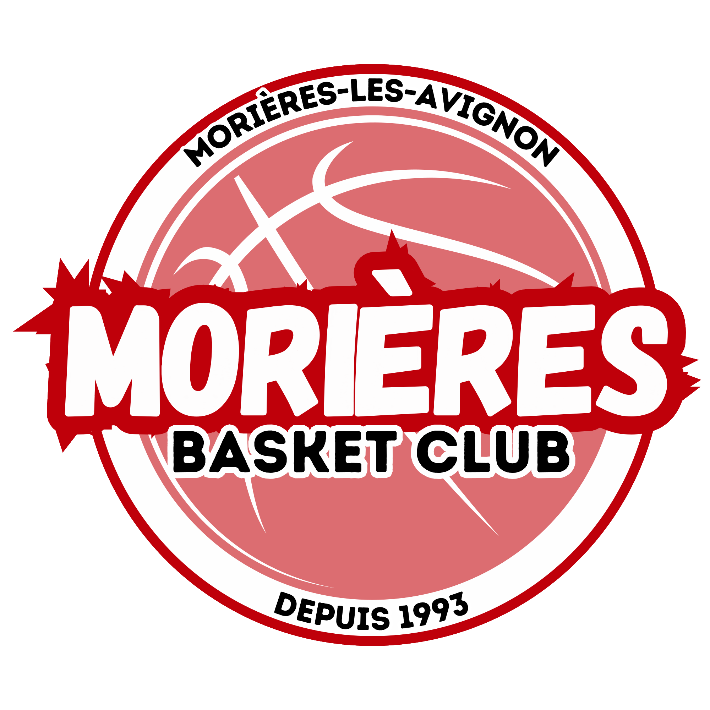

<footer style="
  background-color: #c8102e;
  color: white;
  padding: 2em 1em;
  text-align: center;
  font-family: 'Poppins', sans-serif;
  border-top: 5px solid #8b0c1e;
  box-shadow: 0 -4px 10px rgba(0,0,0,0.15);
  letter-spacing: 0.5px;
  font-size: 0.95em;
">
  <div style="max-width: 900px; margin: auto;">
    
    <p style="margin: 0.3em 0;">🏀 Morières Basket Club — Depuis 1993</p>
    <p style="margin: 0.2em 0; font-size: 0.9em; opacity: 0.85;">
      53 rue Louis Pasteur – 84310 Morières-lès-Avignon | <a href="mailto:morieres.bc@gmail.com" style="color: #fff; text-decoration: underline;">Contactez-nous</a>
    </p>
    <p style="margin-top: 1em; font-size: 0.8em; opacity: 0.65;">
      © 2025 — Site codé avec 💻 & ☕ par des bénévoles qui jouent dur en défense.
    </p>
  </div>
</footer>
